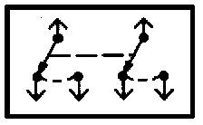
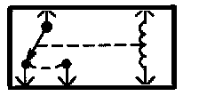
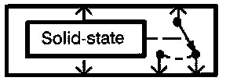

Switches
Switches:

These switches move together; the broken straight line between them means they are mechanically connected.
Switches:

Switches:

Other types of switches are controlled by a coil or a solid state circuit. Unless otherwise noted, all switches are shown in their normal (rest) position, with power OFF.